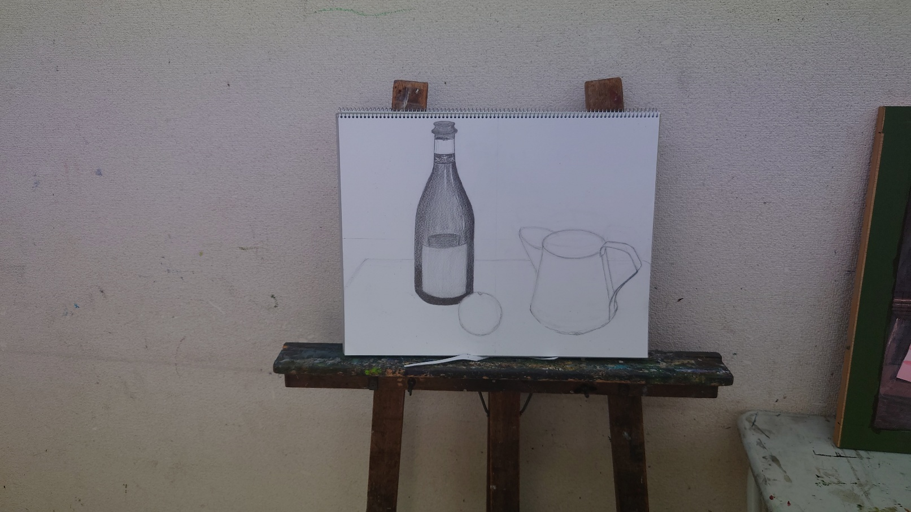
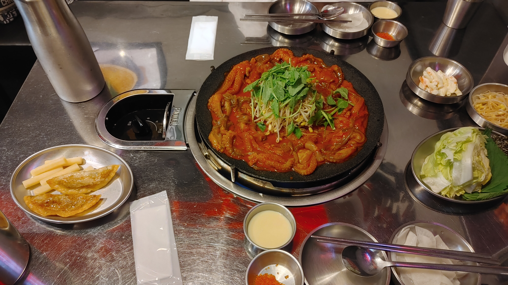
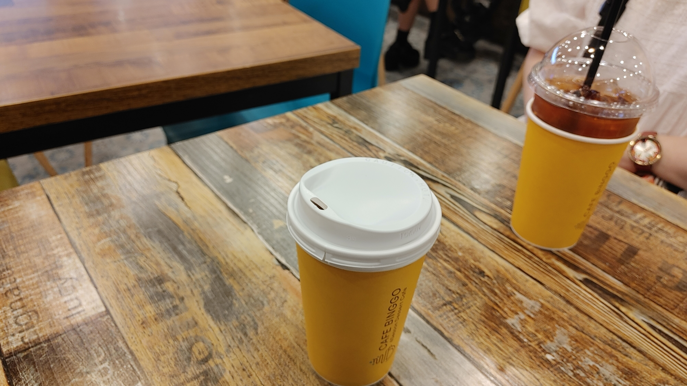

Lieul's Diary
2023/06/26 Monday
Today, my favorite co-worker returned to work.
I'm very happy to meet her. I wish her good health.
After work I went to the hair salon, and cut my hair very short.
Until yesterday I wanted to change my hair to black.
But after cutting my hair, I changed my mind.
I decided to dye my hair pink. I like this hair style.
2023/06/25 Sunday
I learned to tell time in English at my English lesson.
And I also learned about hands of clock, which are called the hour hand, the minute hand, and the second hand.
After the lesson, I cleaned my room.
I threw away four small bookshelves.
So my room became clean, I feel good.
2023/06/24 Saturday
After a long time I went to a theater today. What I watched the movie is The Super Mario bros.
So I would like to have a lot of time and money.
Honestly, I don't like Super Mario series. Because, I think Mario is unattractive and princess peach is a too passive.
But this movie is different. Mario is still unattractive, but princess peach is much more active and independent.
It seems that the characters change with the times.
2023/06/23 Friday
I have a lot of passion. I want to know and learn a lot.
So I would like to have a lot of time and money.
For that reason, when I was young, my dream was to become a vampire.
I thought I needed a long life to achieve my goals.
Even now, I think that may be possible.
Nowadays, medicine has progressed a lot, so I think I can live a long life even if I don't drink blood.
2023/06/22 Thursday
Today I wake up early, and I went to work.
My favorite co-worker has not come to work over two weeks.
She is sick.
I hope she gets back to work soon.
2023/06/21 Wednesday
Today I didn’t go to work either.
I think this was a good choice.
But I should go to the office tomorrow.
I'm going to go to bed early today.
2023/06/20 Tuesday
My condition is worse than I thought.
So I slept all day. But my condition didn’t get better.
I am not sure whether to go to the office tomorrow.
A YouTuber said that Italian espresso tastes very good, so I would like to drink it.
2023/06/19 Monday
I love working, but I felt too tired, so I wanted to rest today.
However I went to the company, because I felt a sense of responsibility.
So, now I exhaust.
Tomorrow, I won't go work.
It's hard to me, but I'll try to rest all day.
2023/06/18 Sunday
I cleaned bedsheets all day.
It’s very hot and sunny day, so washing dries very quickly.
I like to clean my bedsheets. I love the smell of dried laundry.
If I’ll get holiday, I would like to clean the whole house.
I'm bad at rest and laziness.
2023/06/17 Saturday
I have drawn a bottle of champagne.
I have been attending the art school since this April.

I met my friend, we ate webfoot octopus.
Webfoot octopus is in vogue now in Tokyo.

My friend is interested in black tea.
After dinner we drank black tea.

2023/06/16 Friday
Finally, the weekend arrived.
I’m going to the art school tomorrow.
I’ll draw for 3 hours.
And then I’ll meet my friend, we plan to eat webfoot octopus.
2023/06/15 Thursday
I’m proud of myself, because I was still going to work today.
I am not sure whether to go to the office every morning.
I love my job, but I’m so tired. I have to rest.
I am sure that if I continue like this, I will die soon.
2023/06/14 Wednesday
It’s very hot and humid today. I hate that I sweat heavily.
I had a hard time with a lot of work today.
I’d like to have some rest.
I can’t wait for this weekend.
2023/06/13 Tuesday
I was too tired yesterday. So I forgot to write the diary.
Lately I study to make a website.
I decided to write my English diary on that website.
I’d like to make it as soon as fast.
2023/06/11 Sunday
I’m interested in Korean food.
I love vegetables.
As far as possible, I don’t eat red meat.
Because I’m worried about the climate crisis.
2023/06/10 Saturday
Lately I'm interested in minimalism.
Because, someone said if your house is mess, you will get poor.
And another person said your room's condition is like same as your mind.
I agree with their opinions. I want be a rich person.
I'm going to throw unnecessary things.